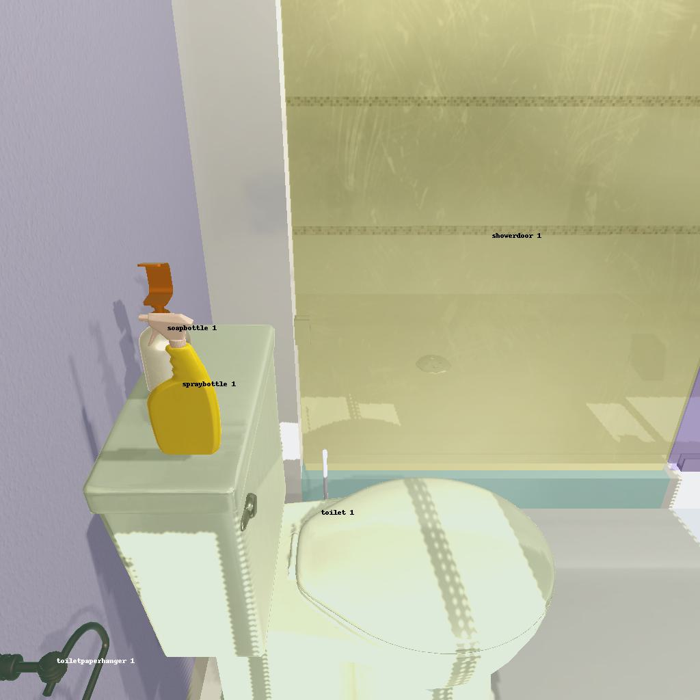
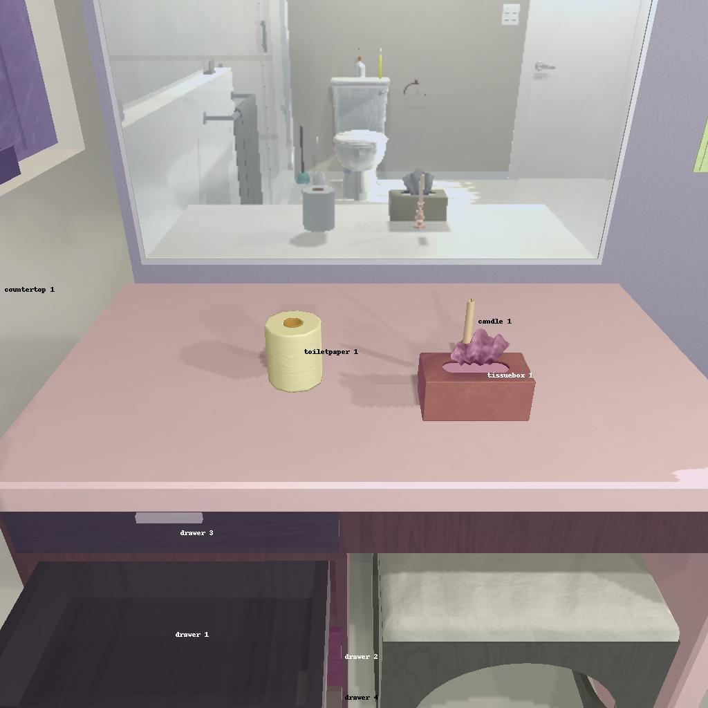

---------------------------------------------------------task: 28---------------------------------------------------------
--------------------------------------------------------------------------------------------------------------------------------------------------------------------
--------------------------------------------------------------------------------------------------------------------------------------------------------------------
Step:--------------------------------------------------------------------------12-------------------------------------------------------------------------------
----------------------------------------
VLM Prompt:
Image1:
Image2:
**Instruction**
1. Analyze the provided image to identify all visible household objects, focusing on those relevant to the task description "find two spraybottle and put them in toilet."
2. Use the analysis of the image and the task hint "The agent must find an object of the desired type, pick it up, find the correct location to place it, put it down there, then look for another object of the desired type, pick it up, return to previous location, and put it down there with the other object." to answer the question: what is the most reasonable action in the choices for the task description "find two spraybottle and put them in toilet"?
4. Decide and write the answer using the template: The answer is: (i): , where i is the real number. If there is no desired object in the image, search every place based on **Initial Observation** to find the object. And if no one is exactly correct, choose a similar answer.
**Initial Observation**
You are in the middle of a room. Looking quickly around you, you can see bathtub (1), bathtubbasin (1), cart (1), sink (1), garbagecan (1), sinkbasin (1), countertop (1), drawer (1-4), toilet (1), toiletpaperhanger (1)
**Answer Choices**
(1): go to bathtub 1
(2): go to bathtubbasin 1
(3): go to cart 1
(4): go to sink 1
(5): go to garbagecan 1
(6): go to sinkbasin 1
(7): go to drawer 1
(8): go to drawer 2
(9): go to drawer 3
(10): go to drawer 4
(11): go to toiletpaperhanger 1
(12): take tissuebox 1 from countertop 1
(13): take toiletpaper 1 from countertop 1
(14): take handtowel 1 from countertop 1
(15): take candle 1 from countertop 1
(16): examine countertop 1
**Answer**
Let's think step by step by following the instructions.
----------------------------------------
----------------------------------------
Original Response:
Firstly, we need to find two spray bottles. From the initial observation, we can rule out some locations as they generally don't hold spray bottles (like the bathtub, bathtub basin, toiletpaper hanger, etc.). Drawers, however, are a common place to store cleaning supplies, which often include spray bottles.
Looking at the images, we can see that Image 1 does not show any spray bottles, but it does show a toiletpaperhanger, toilet, and a shower door. There is a bottle on top of the toilet, but it is not labeled as a spray bottle. Image 2 shows a countertop with various items, none of which are spray bottles.
Therefore, the most reasonable action from the choices would be to search the drawers, as they are not visible in the images and could possibly contain the spray bottles.
The answer is: (7): go to drawer 1. If a spray bottle is not found in drawer 1, the next reasonable action would be to check the other drawers sequentially.
----------------------------------------
----------------------------------------
>>> Refine Original VLM Response and Get Pure Action: go to drawer 1
----------------------------------------
-----------------------------------------------------------------
Running time: 25.643860340118408 seconds
Total Money: 14.127120000000003
-----------------------------------------------------------------
-----------------------------------------------------------------
Text Observation:You arrive at loc 7. The drawer 1 is open. On the drawer 1, you see a tissuebox 1, a toiletpaper 1, a handtowel 1, and a candle 1.
-----------------------------------------------------------------
UNSUCCEED